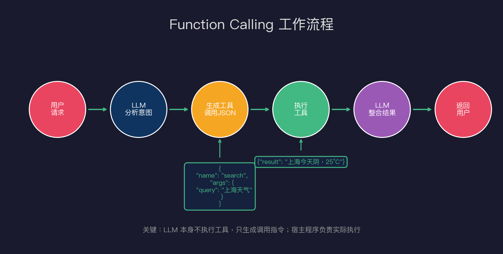
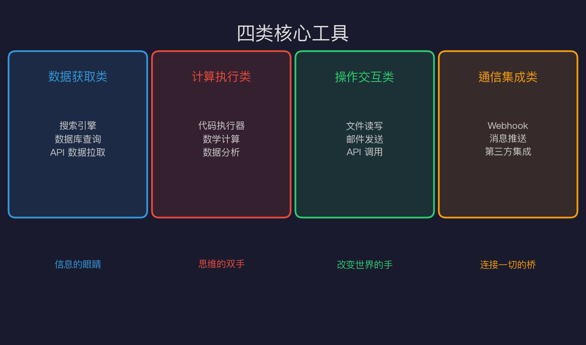
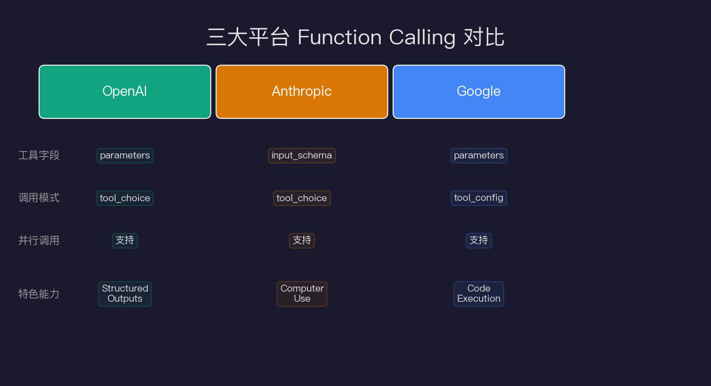
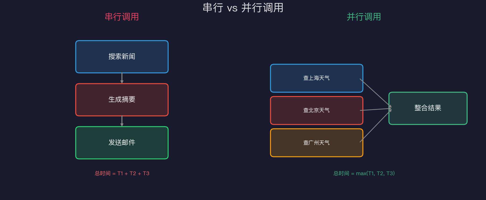
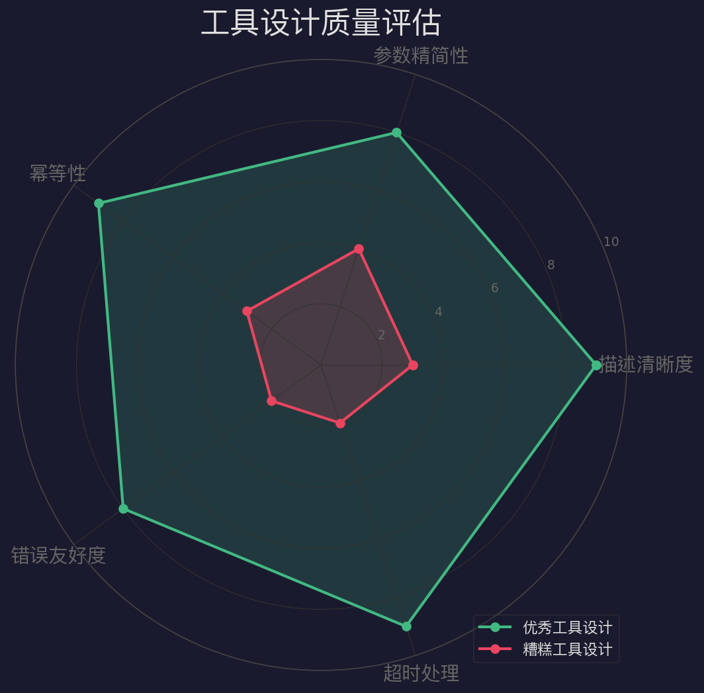

Tool Use：Agent的手和脚
一个没有工具的 Agent，就像一个困在玻璃箱里的天才——看得见外面的世界，却什么都做不了。
如果你问我 Agent 技术中最关键、最实用、最值得深入理解的一个概念是什么，我的回答毫不犹豫：Tool Use（工具调用）。
在上一篇文章中，我们拆解了 Agent 的四大核心模块：LLM、工具、记忆、规划。今天，我们深入其中最关键的一环——工具。没有工具，Agent 就是一个只会说不会做的"键盘侠"。有了工具，Agent 才真正拥有了改变现实世界的能力。
这篇文章会带你从原理到实践，从单一工具调用到多工具编排，彻底搞懂 Tool Use 的方方面面。
一、LLM 的能力边界：为什么需要工具？
在深入讲解 Function Calling 之前，我们先聊一个最基础的问题：大语言模型（LLM）到底能做什么，不能做什么？
LLM 本质上是一个文本预测机器。给它一段文字，它根据训练数据中的统计规律，输出最可能的下一个 token。它的能力令人惊叹——推理、写作、翻译、代码生成……但它有几条铁的边界：
1.1 无法访问实时数据
LLM 有个训练截止日期。问它"今天比特币多少钱"，它只能说"我的知识截止于 2024 年 X 月"。这不是在卖关子——它真的不知道。
想象一下，你雇了一个天才分析师，但他从 2024 年起就与世隔绝，不看新闻、不上网、不接电话。你问他"特斯拉最新季报怎么样？"他只能摊手。这就是没有工具的 LLM 的处境。
1.2 无法执行代码
LLM 可以写出完美的 Python 代码，但它自己跑不了。它只能预测代码"看起来对不对"，而不知道运行结果。
问它"1023 + 4579 的平方根是多少"，它可能给出一个听起来合理但完全错误的数字。这不是笑话——LLM 算术确实很差，因为它本质上是在做"看起来像数学"的文字接龙，而不是真的在计算。
给它一个代码执行器，它就能写代码、跑代码、看结果、修 bug，变成一个真正的程序员助手。
1.3 无法持久化操作
它不能发邮件、不能写文件、不能调用 API、不能下单购物、不能预订机票。它只能描述这些操作，而不能执行它们。
这就好比你有一个绝顶聪明的朋友，他能告诉你"你应该给客户发一封邮件，内容是……"，但他没有手机、没有电脑，你得自己去发。工具就是给他一部手机。
1.4 无法感知外部世界
没有眼睛、没有耳朵——它只有输入给它的文字。摄像头看到什么、传感器测到什么，温度多少、湿度多少，和它没有直接关系。
多模态模型（如 GPT-4o、Claude 3.5）部分解决了"看"的问题，但"实时感知"仍然需要工具来桥接。
1.5 工具如何打破边界
工具（Tool Use）就是打破这四道墙的锤子。
通过给 LLM 配备工具，它能够：
- 🔍 调用搜索 API 获取实时数据
- 💻 启动代码解释器执行计算
- 📝 写文件、发消息、操作数据库
- 🌡️ 感知外部环境（通过传感器 API）
- 📧 发邮件、调 API、完成真实的业务操作
这就是为什么 Agent = LLM + Tools + Memory + Planning。工具是 Agent 伸向外部世界的手和脚。没有工具的 LLM 是哲学家，有了工具的 LLM 是工程师。
二、Function Calling 机制原理
Function Calling（也叫 Tool Use）是目前最主流的工具调用机制。2023 年 6 月 OpenAI 率先推出 Function Calling 能力，随后 Anthropic、Google 纷纷跟进。到今天，几乎所有主流 LLM 都支持这一能力。
理解它的关键是：LLM 本身不执行任何工具，它只生成"调用指令"。
这是很多初学者的误区——以为 LLM 会"自己去调 API"。实际上，LLM 只是一个"指挥官"，它说"去调这个工具，参数是这些"，然后由你的应用程序（宿主程序）去真正执行。
2.1 四步工作流程
让我们用一个具体例子走完整个流程：
用户：上海今天天气怎么样？
Function Calling 工作流程
第一步：LLM 分析意图
LLM 收到问题，结合工具定义（开发者预先提供的 JSON Schema），判断需要调用天气工具。这个判断过程是 LLM 内部推理完成的——它"读懂"了工具的描述和参数，决定这个问题需要借助外部工具。
关键在于：你给 LLM 的工具定义越清晰，它的判断越准确。后面会详细讲工具定义的艺术。
第二步：生成工具调用 JSON
LLM 输出的不是直接回答，而是一段结构化的工具调用指令：
{
"tool_calls": [{
"id": "call_abc123",
"type": "function",
"function": {
"name": "get_weather",
"arguments": "{\"city\": \"上海\", \"date\": \"today\"}"
}
}]
}注意几个细节：
id是唯一标识，用于后续匹配响应arguments是 JSON 字符串（不是 JSON 对象！这是个常见的坑）- LLM 可以一次返回多个
tool_calls（并行调用）
第三步：宿主程序执行工具
应用程序（不是 LLM！）解析这段 JSON，实际调用天气 API：
result = weather_api.get(city="上海", date="today")
# 返回: {"temperature": 22, "weather": "阴", "humidity": 78}这一步完全由你的代码控制。你可以加日志、做鉴权、限速、缓存——LLM 完全不知道这些细节。
第四步：LLM 整合结果
把工具执行结果塞回对话上下文，LLM 生成最终回答：
上海今天天气阴，气温 22°C，湿度 78%。出门建议带把伞。整个过程有个关键洞见：LLM 是大脑，工具是手脚，宿主程序是中枢神经系统。这三者缺一不可。
2.2 一个更复杂的真实例子
上面的天气查询太简单了。来看一个更贴近实际的例子——一个投资助手：
用户："帮我分析一下特斯拉最近一周的股价走势，如果跌幅超过5%就帮我发个提醒邮件"这需要 多步编排：
第1轮 LLM 调用：
→ tool_call: get_stock_data("TSLA", period="1w")
应用程序执行，返回股价数据
第2轮 LLM 调用（读到股价数据后）：
→ tool_call: execute_python("计算涨跌幅的代码")
应用程序执行代码，返回：跌幅 -6.2%
第3轮 LLM 调用（判断跌幅 > 5%）：
→ tool_call: send_email(
to="user@example.com",
subject="TSLA 股价预警",
body="特斯拉本周跌幅 6.2%，建议关注..."
)三轮对话、三次工具调用、自动完成分析和通知。这就是 Agent 的魅力——LLM 负责思考和决策，工具负责执行。
三、工具定义：JSON Schema 的艺术
工具调用的质量，80% 取决于工具定义的质量。这不是夸张——工具定义就是你和 LLM 之间的"契约"，写得好坏直接决定 LLM 能否正确理解和使用你的工具。
3.1 一个好的工具定义长什么样
以一个搜索工具为例：
{
"name": "web_search",
"description": "在互联网上搜索实时信息。适用于：需要最新新闻、当前价格、实时数据的场景。不适用于：静态知识问答（直接用LLM回答更好）。",
"parameters": {
"type": "object",
"properties": {
"query": {
"type": "string",
"description": "搜索关键词。请使用简洁、精确的中英文关键词，避免用完整句子。例如：'上海 天气 今天' 而非 '上海今天的天气情况如何'"
},
"num_results": {
"type": "integer",
"description": "返回结果数量，默认3，最大10",
"default": 3,
"minimum": 1,
"maximum": 10
}
},
"required": ["query"]
}
}拆解几个关键设计：
① description 是灵魂
description 不只是说"是什么"，还说了"什么时候用"和"什么时候不用"——这极大减少误调用。LLM 读到"不适用于：静态知识问答"，就不会对"什么是光合作用"这种问题调用搜索了。
② 参数描述要带例子
query 的描述里给了具体例子，教 LLM 如何构造好的查询。没有例子的描述就像没有样板间的楼盘——买家（LLM）不知道往里放什么家具。
③ 防御性约束
num_results 有默认值、最小值、最大值。这防止 LLM 传入 num_results: 99999 打爆你的 API。
3.2 工具描述的反模式
❌ 太简短：description: "搜索"——LLM 完全不知道什么时候该用
❌ 太冗长：写了 500 字的描述——浪费 token，LLM 反而抓不住重点
❌ 没有边界：只说了能做什么，不说不能做什么——导致该调用不调用的情况
❌ 参数无描述："city": {"type": "string"}——LLM 不知道该填中文还是英文、城市名还是城市编码
✅ 最佳实践：50-150 字，包含用途、适用场景、不适用场景、关键参数示例。

工具分类矩阵
四、四类核心工具深度解析
根据功能，工具大致分为四类。每类都有独特的设计考量。
4.1 数据获取类：信息的眼睛
这类工具让 Agent 能看见外部世界的实时状态。典型代表：搜索引擎、数据库查询、API 数据拉取。
搜索工具是最基础的数据获取工具：
@tool
def web_search(query: str, num_results: int = 3) -> list[dict]:
"""搜索互联网获取实时信息"""
results = brave_search_api.search(query, count=num_results)
return [{"title": r.title, "url": r.url, "snippet": r.description}
for r in results]设计要点：
- 返回结构化数据，不要返回原始 HTML（LLM 处理 HTML 效率极低）
- 包含 URL，让 LLM 能进一步抓取详情
- 适当截断内容，避免上下文窗口爆炸（搜索结果如果超过 2000 token，LLM 的注意力会显著下降）
数据库查询工具在企业场景极常见：
@tool
def query_database(sql: str, database: str = "production") -> dict:
"""执行SQL查询。只支持SELECT语句，禁止修改操作。"""
if not sql.strip().upper().startswith("SELECT"):
raise ValueError("只允许SELECT查询")
with get_connection(database) as conn:
result = conn.execute(sql)
return {"rows": result.fetchall(), "columns": result.keys()}关键设计：显式禁止危险操作（DELETE、DROP、UPDATE），在工具层做安全防护，而不是信任 LLM 的自制力。要知道，LLM 的"自制力"完全取决于 prompt——而 prompt 是可以被注入攻击的。
4.2 计算执行类：思维的双手
代码执行器是最强大也最危险的工具。它赋予了 Agent 几乎无限的能力——任何能用代码实现的事情都能做。但能力越大，风险越大。
@tool
def execute_python(code: str, timeout: int = 30) -> dict:
"""在安全沙箱中执行Python代码，返回输出和执行状态"""
sandbox = DockerSandbox(
image="python:3.11-slim",
network_disabled=True, # 禁止网络访问
memory_limit="256m", # 限制内存
read_only=True # 只读文件系统
)
try:
result = sandbox.run(code, timeout=timeout)
return {"stdout": result.stdout, "stderr": result.stderr,
"exit_code": result.exit_code}
except TimeoutError:
return {"error": f"执行超时（{timeout}秒）", "exit_code": -1}安全原则：
- ✅ 必须在沙箱（Docker/gVisor/Firecracker）中运行
- ✅ 禁止网络访问（防止数据外泄）
- ✅ 限制内存和执行时间（防止资源耗尽）
- ✅ 只读文件系统（防止篡改宿主机）
- ❌ 永远不要在宿主机直接
exec()
这不是可选项，是必选项。历史上已经有多起因为 Agent 代码执行不隔离导致的安全事故。
4.3 操作交互类：改变世界的手
文件操作工具是幂等性设计的好例子：
@tool
def write_file(path: str, content: str, mode: str = "write") -> dict:
"""写入文件。mode='write'覆盖写，mode='append'追加写。"""
allowed_dirs = ["/workspace", "/tmp/agent"]
if not any(path.startswith(d) for d in allowed_dirs):
raise PermissionError(f"不允许写入路径: {path}")
with open(path, 'w' if mode == 'write' else 'a') as f:
f.write(content)
return {"success": True, "path": path, "bytes_written": len(content)}设计亮点：
- 路径白名单防止目录遍历攻击（LLM 可能被诱导写入
/etc/passwd） mode参数明确区分覆盖和追加，避免意外数据丢失- 返回
bytes_written让 LLM 知道操作结果
4.4 通信集成类：连接一切的桥梁
邮件、Slack 消息、Webhook——这类工具让 Agent 能主动与外部系统和人交互。
@tool
def call_rest_api(
url: str,
method: str = "GET",
headers: dict = None,
body: dict = None,
timeout: int = 30
) -> dict:
"""调用REST API。支持GET/POST/PUT/DELETE。"""
import requests
resp = requests.request(
method=method.upper(),
url=url,
headers=headers or {},
json=body,
timeout=timeout
)
return {
"status_code": resp.status_code,
"body": resp.json() if 'application/json' in resp.headers.get('content-type', '') else resp.text[:2000],
"success": resp.ok
}注意：对于通信类工具，建议增加人工确认步骤（Human-in-the-loop），尤其是发邮件、发消息等不可撤销操作。
五、三大平台对比：OpenAI vs Anthropic vs Google

三大平台 Function Calling 对比
三大平台的 Function Calling 在概念上完全相同，但 API 格式略有差异。作为开发者，了解这些差异有助于跨平台开发。
5.1 OpenAI 格式
response = client.chat.completions.create(
model="gpt-4o",
tools=[{
"type": "function",
"function": {
"name": "get_weather",
"description": "获取城市天气",
"parameters": {
"type": "object",
"properties": {"city": {"type": "string"}},
"required": ["city"]
}
}
}],
tool_choice="auto"
)OpenAI 的特点是 tool_choice 支持三种模式：
"auto"：模型自行决定是否调用（最常用）"required"：强制调用工具{"type": "function", "function": {"name": "xxx"}}：指定调用某个工具
5.2 Anthropic 格式
response = anthropic.messages.create(
model="claude-opus-4-5",
tools=[{
"name": "get_weather",
"description": "获取城市天气",
"input_schema": {
"type": "object",
"properties": {"city": {"type": "string"}},
"required": ["city"]
}
}]
)主要差异：
- 字段名不同：OpenAI 用
parameters，Anthropic 用input_schema - Anthropic 有独特的
computer_use内置工具，能直接控制电脑桌面 - Claude 在工具调用前会输出思考过程（
thinkingcontent block）
5.3 选择建议
- 用什么模型就用什么格式——最简单
- 或用 LangChain/LlamaIndex 做抽象层——屏蔽差异，一份工具定义多平台通用
- Google Gemini 最接近 OpenAPI 标准，企业集成最友好
六、工具编排：串行、并行、条件
真实场景往往需要多个工具协作。编排策略直接影响效率和用户体验。

串行 vs 并行调用
6.1 串行调用
适合有依赖关系的场景——后一步依赖前一步的结果：
用户："帮我分析最近的 AI 新闻，然后总结成中文摘要，发到我的邮箱"
步骤：
1. search("AI news latest") → 获取新闻
2. summarize(news) → 生成摘要（依赖步骤1的结果）
3. send_email(summary) → 发送邮件（依赖步骤2的结果）总时间 = T1 + T2 + T3，无法优化。
6.2 并行调用
适合独立任务，效率提升显著：
用户："比较上海、北京、广州今天的天气"
步骤：同时调用
get_weather("上海") ─┐
get_weather("北京") ─┼→ 整合结果 → 生成对比报告
get_weather("广州") ─┘总时间从 3 × T 缩短到 1 × T。GPT-4o 和 Claude 3.5 都原生支持一次返回多个 tool_calls——模型足够聪明，能自动识别哪些调用可以并行。
6.3 条件调用
根据前一步结果动态决定下一步：
# Agent 内部逻辑
result = search(query)
if result.confidence < 0.8:
# 结果不够好，换策略
result = search(query + " site:wikipedia.org")
if result.needs_calculation:
calc_result = execute_python(result.formula)这种 观察-思考-行动 的循环就是 ReAct 框架的核心，也是现代 Agent 系统最常见的运行模式。
七、工具设计的五大原则

工具设计质量评估
原则一：描述胜过命名
工具名字不重要，描述最重要。LLM 通过阅读 description 来决定何时调用工具。名字只是代号，描述才是说明书。
❌ 差：description: "搜索工具"
✅ 好：description: "在互联网实时搜索信息，适合需要当前数据的场景；对于常识性问题请直接回答，无需调用此工具"
原则二：参数宁少勿多
每多一个参数，LLM 填错的概率就提升一倍。经验法则：核心参数 ≤ 3 个，可选参数 ≤ 5 个。
如果确实需要复杂输入，考虑：
- 把复杂参数折叠到一个 JSON 字符串
- 拆成多个简单工具（
search_by_name+search_by_id）而不是一个复杂工具（search+ 十个参数）
原则三：幂等性优先
read_file 天然幂等，调用多次结果相同。delete_file 不幂等——调用两次第二次会报错。
对于非幂等操作，建议在工具内部做去重检查，或者返回"已执行过"的提示而不是报错。
原则四：错误信息要对 LLM 友好
# ❌ 差
raise Exception("Error")
# ✅ 好
raise ValueError("参数 'city' 不能为空。请提供城市名，如 '上海' 或 'Shanghai'")LLM 会把错误信息读回去，决定怎么重试。有意义的错误信息 = 更好的自动恢复能力。
原则五：超时和兜底必须处理
任何外部调用都可能卡死或失败。没有超时处理的工具会让整个 Agent 永远等待：
try:
result = external_api.call(timeout=30)
except TimeoutError:
return {"error": "服务超时（30秒），建议稍后重试或换用其他方式"}
except Exception as e:
return {"error": f"调用失败: {str(e)}，请检查参数后重试"}八、常见陷阱与防坑指南
陷阱一：工具描述"太聪明"
有些开发者会写复杂的条件逻辑在描述里，试图"引导" LLM 的行为。结果反而让 LLM 困惑。工具描述要直接、明确、无歧义。
陷阱二：参数校验缺失
永远不要信任 LLM 生成的参数合法——LLM 可能给你传一个 email 格式的 SQL 注入：
@tool
def send_email(to: str, subject: str, body: str) -> dict:
import re
if not re.match(r'^[^@]+@[^@]+\.[^@]+$', to):
raise ValueError(f"无效的邮箱地址: {to}")
if len(subject) > 200:
raise ValueError("标题太长（最大200字符）")
# ... 发送逻辑陷阱三：工具数量爆炸
有些项目把所有功能都做成工具，结果工具列表有几十个。LLM 处理太多工具时会"选择困难症"。
最佳实践：保持核心工具 ≤ 15-20 个。如果确实需要更多，实现工具路由——先让 LLM 选择工具类别，再从该类别的小集合中选具体工具。
陷阱四：循环调用
Agent 可能陷入死循环：分析结果不满意 → 重新搜索 → 还是不满意 → 再搜索……
MAX_TOOL_CALLS = 20
tool_call_count = 0
while True:
response = llm.call(messages)
if not response.tool_calls:
break
tool_call_count += len(response.tool_calls)
if tool_call_count > MAX_TOOL_CALLS:
messages.append({"role": "user", "content": "请基于已有信息直接回答，不要继续调用工具"})比粗暴报错更好的策略是：温柔地告诉 LLM 该停下来了。
九、从工具调用到真正的 Agent
工具调用是 Agent 能力的基础，但不是全部。一个真正有用的 Agent 需要：
- 工具（Tool Use）：能做什么——本文的主题
- 记忆（Memory）：记住了什么——下一篇展开
- 规划（Planning）：怎么做——后续深入
这三者缺一不可。工具让 Agent 有了手脚，记忆让它不会失忆，规划让它能把复杂任务拆解成一步步可执行的方案。
但现在，你已经理解了最关键的部分：LLM 是大脑，工具是接口，而你——开发者——是设计这个系统的架构师。
工具设计得好，Agent 就像一个得心应手的助手，能帮你查数据、写代码、发邮件、做分析，效率提升十倍。工具设计得差，再强大的 LLM 也会在错误的工具调用中迷失方向，给出荒谬的结果。
记住：好的工具描述值千行代码。
下一篇，我们聊 Agent 的第二大核心能力——Memory（记忆）。一个没有记忆的 Agent，每次对话都像初次见面，这显然不够用。敬请期待。
十、实战案例：构建一个智能客服 Agent 的工具集
最后，让我们用一个完整的实战案例来串联本文的所有知识点。假设你要构建一个电商智能客服 Agent，它需要以下工具：
tools = [
# 数据获取类
query_order(order_id) → 查询订单状态
search_products(keyword, category) → 搜索商品
get_user_profile(user_id) → 获取用户信息
# 计算执行类
calculate_shipping(origin, destination, weight) → 计算运费
calculate_discount(items, coupon_code) → 计算优惠
# 操作交互类
create_ticket(title, description, priority) → 创建工单
update_order_status(order_id, status) → 更新订单
# 通信集成类
send_notification(user_id, message) → 发送通知
escalate_to_human(conversation_id, reason) → 转人工
]总共 9 个工具，每个职责清晰、参数简洁、描述明确。当用户说"我的订单 12345 怎么还没到"，Agent 会：
1. 调用 query_order("12345") 查询状态
2. 如果显示"已发货"，调用 calculate_shipping() 估算到达时间
3. 生成友好的回复："您的订单已发货，预计明天到达"
4. 如果发现异常，调用 create_ticket() 自动创建工单并 escalate_to_human() 转人工
整个流程无需人工干预，但又在关键节点保留了人工兜底——这才是一个设计良好的 Agent 系统。